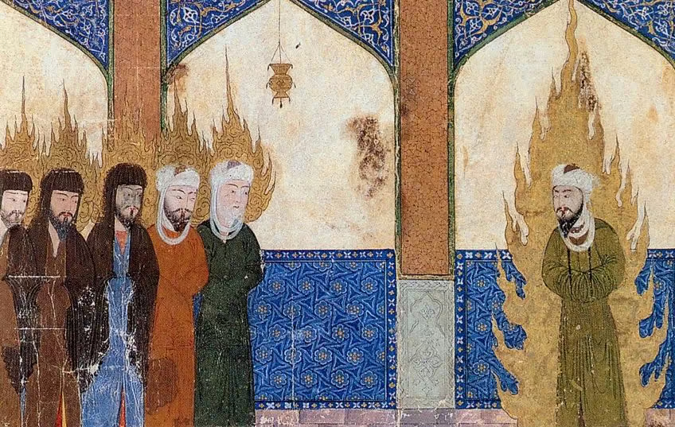

O Esoterismo e a Mística no Islã
Prefácio
O esoterismo e a mística são aspectos profundos e frequentemente ocultos das grandes tradições religiosas, e no Islã não é diferente. O sufismo, a corrente mística do Islã, é uma expressão rica dessa busca espiritual. Através de suas práticas, histórias e ensinamentos, os sufis procuram uma experiência direta e pessoal de Deus, transcendendo a religiosidade superficial para alcançar uma compreensão mais profunda e esotérica.
Neste texto, exploraremos o esoterismo e a mística no Islã, destacando o sufismo e suas práticas, lendas e histórias esotéricas, parábolas e ensinamentos místicos, a cosmogonia esotérica islâmica e textos esotéricos fundamentais. Essas histórias e conceitos místicos proporcionam uma visão fascinante e inspiradora da espiritualidade islâmica, destacando a busca pelo conhecimento divino e a união com Deus. Assim como em outras tradições esotéricas, esses elementos místicos servem para inspirar, guiar e iluminar os crentes em sua jornada espiritual.
Sufismo
O sufismo é a corrente mística do Islã que busca a experiência direta e pessoal de Deus. Os sufis praticam diversas disciplinas espirituais para purificar o coração e a alma, buscando a união com o Divino. Os sufis usam simbolismos, histórias e ensinamentos esotéricos para transmitir suas ideias.
Lendas e Histórias Esotéricas no Islã
A Noite da Ascensão (Isra e Miraj)
• Narrativa: A jornada noturna do Profeta Muhammad de Meca a Jerusalém e sua ascensão aos céus é uma das histórias mais esotéricas do Islã. Segundo a tradição, o anjo Jibril (Gabriel) guiou Muhammad até a Mesquita de Al-Aqsa, de onde ele ascendeu através dos sete céus, encontrando profetas anteriores e chegando à presença divina.
• Significado: Esta jornada simboliza a ascensão espiritual e a proximidade com Deus. É celebrada pelos muçulmanos e tem um profundo significado místico, representando a jornada da alma em direção ao Divino.

Khidr (Al-Khidr)
• Narrativa: Khidr é uma figura enigmática e misteriosa no Islã, frequentemente identificado como um guia espiritual. A história de Khidr aparece no Alcorão na sura Al-Kahf, onde ele encontra o profeta Moisés e ensina-lhe lições através de ações aparentemente incompreensíveis.
• Significado: Khidr representa o conhecimento esotérico e divino que transcende a lógica humana. Sua história simboliza a importância da paciência e da aceitação do mistério da vontade de Deus.
Parábolas e Ensinos Esotéricos
As Histórias de Rumi
Jalaluddin Rumi, um dos poetas sufis mais conhecidos, escreveu inúmeras histórias e parábolas com profundo significado esotérico e místico.
• O Elefante na Sala Escura: Esta parábola conta a história de várias pessoas que tentam descrever um elefante em uma sala escura, cada uma tocando uma parte diferente e chegando a conclusões diferentes. A história simboliza como diferentes percepções e experiências de Deus podem levar a compreensões variadas, mas todas são parte de uma verdade maior.
• Significado: Rumi usa essas histórias para ilustrar ensinamentos espirituais profundos, convidando os leitores a olhar além das aparências superficiais e a buscar a verdade interna.

O Esoterismo na Cosmogonia Islâmica
A Luz Muhammadiana
• Narrativa: A tradição esotérica islâmica fala da "Luz Muhammadiana" (Nur Muhammad), que é considerada a primeira criação de Deus e a essência do Profeta Muhammad. Esta luz é vista como a fonte de toda criação e a conexão entre o Criador e o universo.
• Significado: A Luz Muhammadiana simboliza a presença divina no mundo e a ligação mística entre o ser humano e Deus. É um conceito central em muitas escolas sufis.

Textos Esotéricos
Al-Futuhat al-Makkiyya (As Revelações de Meca) de Ibn Arabi
• Narrativa: Ibn Arabi, um dos maiores místicos e filósofos sufis, escreveu extensivamente sobre a natureza da realidade, a cosmologia esotérica e a união com Deus. Seu trabalho "Al-Futuhat al-Makkiyya" é uma obra monumental que explora essas ideias em profundidade.
• Significado: Os escritos de Ibn Arabi são fundamentais para o entendimento esotérico do Islã, oferecendo um mapa espiritual detalhado para os buscadores do caminho místico.
Reflexão
O Islã, através do sufismo, oferece uma rica tapeçaria de lendas, mistérios e ensinamentos esotéricos. Essas histórias e conceitos místicos proporcionam uma compreensão mais profunda da espiritualidade islâmica, destacando a busca pelo conhecimento divino e a união com Deus. Como em outras tradições esotéricas, esses elementos místicos servem para inspirar, guiar e iluminar os crentes em sua jornada espiritual.